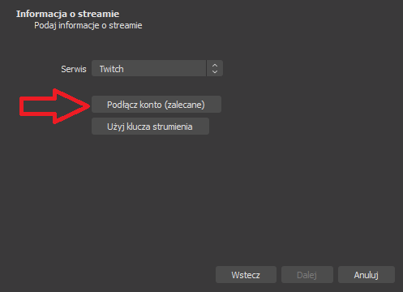
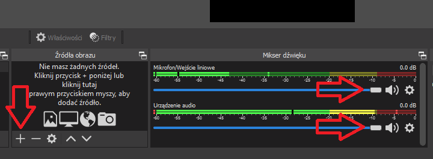
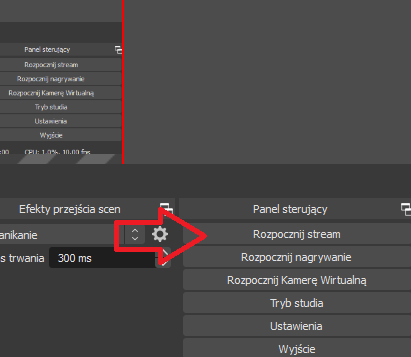

<div class="homework-details">
  <div class="homework-frame">
    <h1>Rozpocznij live</h1>
    <div class="frame-test">
      <div class="one-section">
        <h4>Pobierz OBS Studio i zainstaluj według instrukcji</h4>
        <div class="button-row">
          <a
            type="button"
            class="btn instuction-button"
            href="https://obsproject.com/download"
            target="_blank"
            >Pobierz OBS</a
          >
        </div>
      </div>
      <div class="one-section">
        <h4>Podczas pierwszego uruchomienia programu podłącz konto twitch:</h4>
        
      </div>
      <div class="one-section">
        <h4>Dodaj źróła obrazu i dźwięku:</h4>
        
      </div>
      <div class="one-section">
        <h4>Rozpocznij live w programie OBS Studio:</h4>
        
      </div>
    </div>
  </div>
</div>
